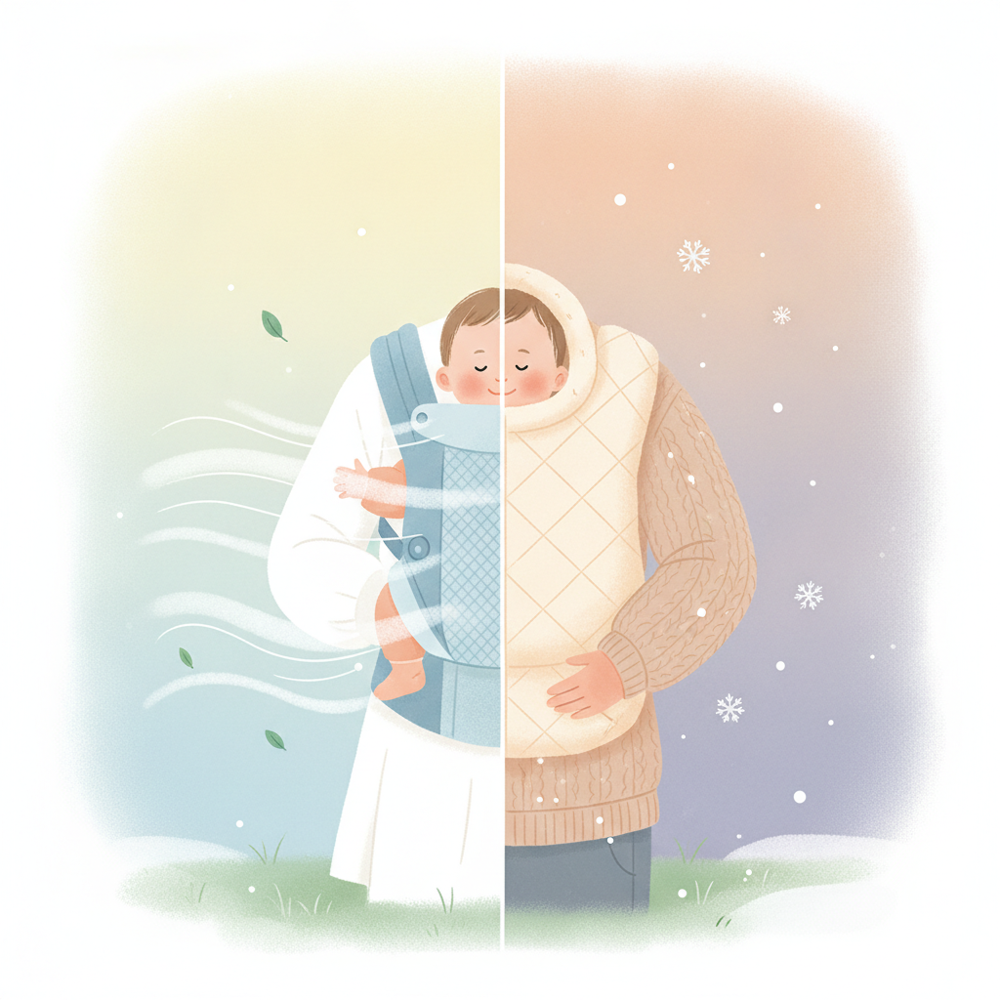

季節別で選ぶ抱っこ紐の通気性・防寒性チェックポイント
公開日: 2026-08-12
👶 抱っこ紐選びで見落とされがちな「季節対応」
抱っこ紐を選ぶとき、多くの人がまず気にするのはデザインや装着のしやすさ、価格ではないでしょうか。もちろんそれらも大切な要素ですが、実際に使い始めてから困りやすいのが「季節による暑さ・寒さ」の問題です。夏は蒸れて赤ちゃんが汗だくになり、冬は防寒対策が不十分で親も子も冷えてしまう、という声はよく聞かれます。
抱っこ紐は肌と肌が密着する時間が長い育児アイテムです。そのため、素材や構造によって体感温度がかなり変わってきます。この記事では、季節別にチェックしておきたい通気性・防寒性のポイントを整理してみました。
☀️ 夏に注目したい通気性のポイント
夏場の抱っこ紐選びでまず確認したいのは、生地の素材です。メッシュ素材やコットン、麻混素材など、風を通しやすい生地は熱がこもりにくく、汗をかいても比較的乾きやすい傾向があります。特にメッシュパネルが背中やお腹の部分に大きく配置されているタイプは、蒸れやすい部位の熱を逃しやすくなります。
また、抱っこ紐と赤ちゃんの間に汗取りパッドを挟めるかどうかも意外と重要なポイントです。パッドが取り外し可能で洗濯しやすい構造だと、汗をかいた後の衛生面でも扱いやすくなります。
- メッシュ素材・通気孔の有無
- 汗取りパッド・インナーの着脱可否
- 色の濃さ(濃色は熱を吸収しやすい傾向)
❄️ 冬に確認したい防寒性のポイント
冬は逆に、外気から赤ちゃんをどう守るかがポイントになります。防寒性を考えるうえで見ておきたいのは、抱っこ紐自体の防寒機能よりも「防寒カバーとの併用がしやすいか」という視点です。抱っこ紐本体は季節を問わず使える薄手のものを選び、冬だけ専用のカバーを重ねるという使い方をしている家庭も多いようです。
抱っこ紐単体で防寒したい場合は、裏起毛タイプやキルティング素材のものもありますが、厚手すぎると春や秋に使いにくくなる場合もあるので、家庭の使用頻度や地域の気候に合わせて検討するとよさそうです。
🌸 春・秋の中間シーズンでの選び方
春や秋は気温の変化が大きく、朝晩と日中の差も出やすい時期です。この時期は、抱っこ紐単体の防寒性よりも「調整のしやすさ」を重視するのが実用的かもしれません。例えば、赤ちゃんの服装で温度調整しやすいよう、抱っこ紐自体は比較的薄手のオールシーズンタイプを選び、必要に応じて薄手のブランケットを足すという方法もあります。
中間シーズンは体調管理が難しい時期でもあるので、赤ちゃんの背中に汗をかいていないか、逆に手足が冷えていないかを、こまめに確認する習慣をつけておくと安心です。
🧵 素材別に見る通気性・防寒性の違い
抱っこ紐の素材は、大きく分けるとコットン系、ポリエステル系、メッシュ素材の3タイプに分類できます。コットンは肌触りが良く通気性もある程度確保できますが、乾きにくいという面もあります。ポリエステルは速乾性があり手入れがしやすい一方、蒸れやすいと感じる人もいるようです。メッシュは通気性に優れますが、防寒性を求める場合は別途カバーが必要になることが多いでしょう。
一つの素材に絶対的な正解はなく、家庭の洗濯頻度や住んでいる地域の気候によって向き不向きが変わってくる、というのが実際のところです。
🧺 お手入れのしやすさも合わせて確認したい
通気性・防寒性と並んで見落とされがちなのが、洗濯やお手入れのしやすさです。夏場は汗をかく機会が増えるため、丸洗いできるタイプや、パッド部分だけ取り外して洗濯できるタイプだと衛生面での安心感が高まります。冬場は防寒カバーを併用することが多くなる分、カバー自体が洗いやすい素材かどうかもチェックしておくとよいでしょう。
特に赤ちゃんは肌が敏感なため、洗濯表示や推奨される洗剤の種類も事前に確認しておくと、季節を通して清潔に使い続けやすくなります。
⚠️ 通気性・防寒性チェック時の注意点
通気性や防寒性を確認する際は、生地の見た目だけで判断せず、実際の使用シーンを想像することが大切です。例えば「メッシュだから涼しい」と思っても、装着位置によっては密着面が多く、思ったより熱がこもることもあります。逆に「厚手だから暖かい」と思っても、風を通しやすい構造だと外気の影響を受けやすい場合もあります。
また、赤ちゃんは体温調節がまだ苦手な時期です。抱っこ紐の機能だけに頼らず、こまめに背中やうなじの汗、手足の冷たさを確認する習慣を持っておくと、季節を問わず快適に過ごしやすくなります。
❓ よくある質問
Q. 抱っこ紐は夏用・冬用で分けて買うべきですか?
必須ではありませんが、使用頻度が高い家庭では、オールシーズン用の本体に加えて夏用の汗取りパッドや冬用の防寒カバーを別途用意する方法も選ばれています。予算や収納スペースと相談しながら検討するとよさそうです。
Q. メッシュ素材は冬でも使えますか?
メッシュ素材自体は通気性重視のため、冬は防寒カバーやブランケットを併用するケースが多いです。メッシュ単体で冬の外出をカバーするのは難しい場合が多いでしょう。
Q. 中古の抱っこ紐でも通気性は確認できますか?
生地の状態や毛羽立ち、パッドの劣化具合を確認することで、ある程度の目安にはなります。ただし経年劣化により本来の通気性・防寒性が変化している可能性もあるため、購入前によく確認しておくと安心です。
この記事でおすすめしたいアイテム
 PR
PR
 PR
PR
 PR
PR
本ページのリンクには一部アフィリエイトリンクが含まれます(#PR)。